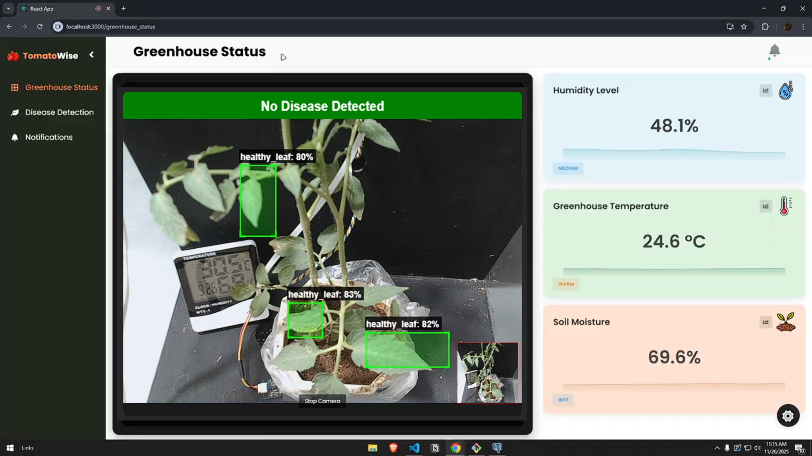
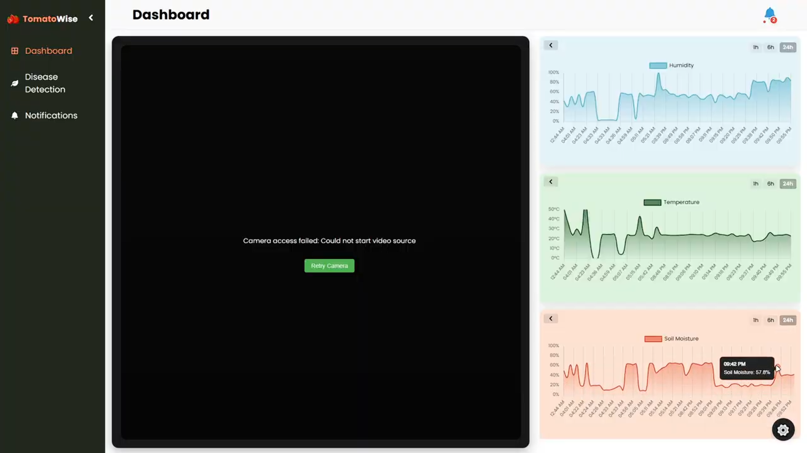
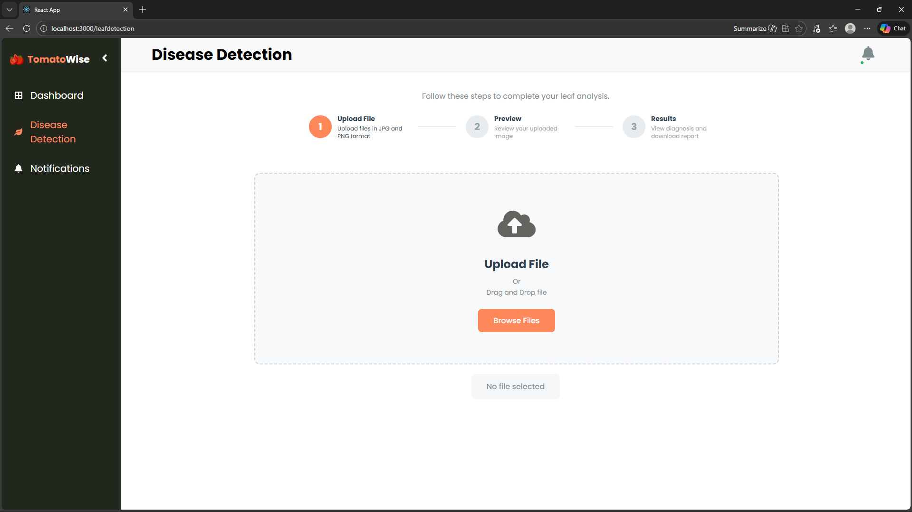
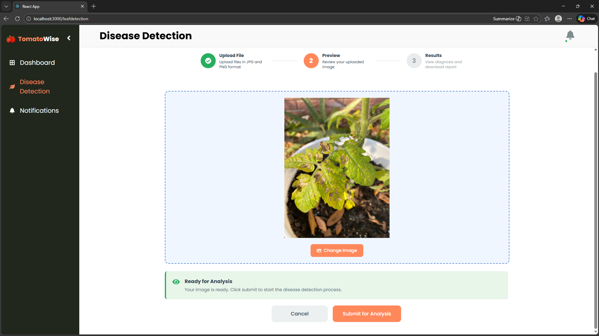
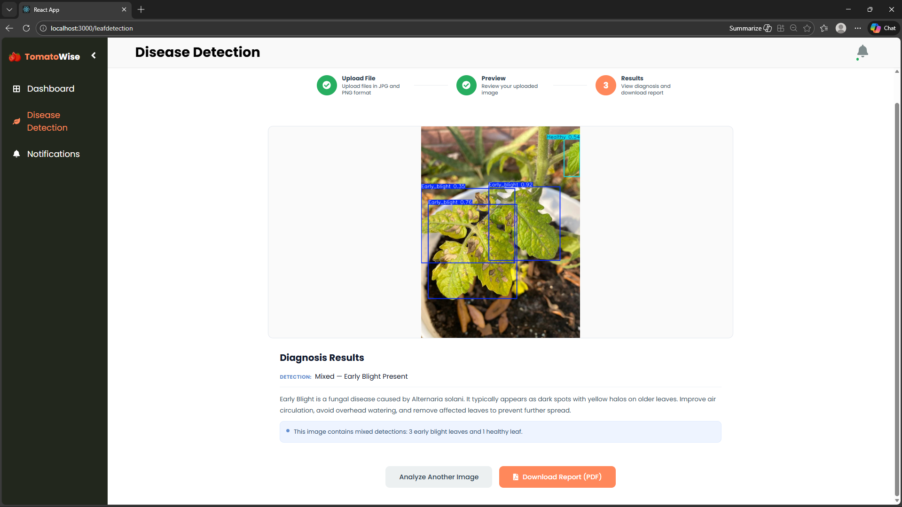
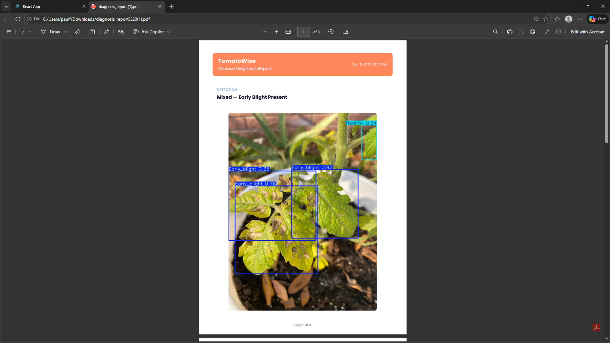
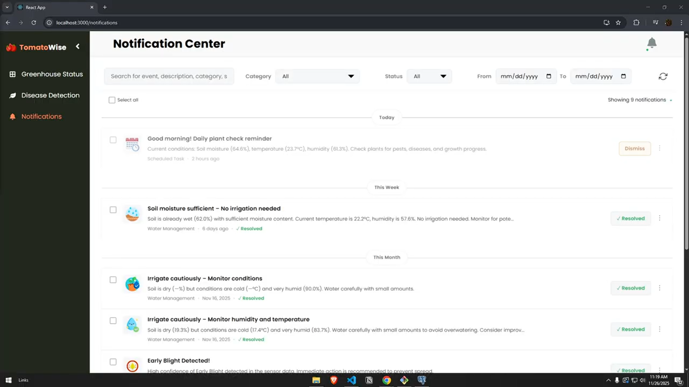

TOMATOWISE
An IoT and machine learning-based tomato care system designed to address inefficient water use and delayed early blight detection in greenhouse environments. The system integrates Raspberry Pi 4, environmental sensors, Fuzzy Logic Control, and a YOLOv8s computer vision model to support real-time monitoring, intelligent water management, prescriptive recommendations, and automated disease detection. I initially contributed to the frontend development using React.js before transitioning to the hardware and machine learning components, where I handled the system wiring, Raspberry Pi 4 programming, Fuzzy Logic-based control logic, and training of the YOLOv8s model. The completed system demonstrated an 11.8% improvement in water efficiency compared with traditional watering and received an overall evaluation rating of 3.87, interpreted as “Strongly Agree,” from greenhouse operators.







Select an image to view it larger.